深度学习平台及应用笔记
老师上课提到的几个问题
1、sigmoid和softmax有什么关系
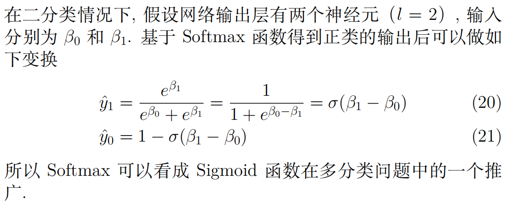
2、为什么用交叉熵损失函数而不用MSE
https://blog.csdn.net/wuzhongqiang/article/details/115603924
相对熵，也称为KL散度
交叉熵=信息熵+相对熵。 而如果一个数据集给定了之后，其实信息熵就确定了，所以交叉熵正比于相对熵，于是乎，交叉熵损失就能够衡量两个分布之间的差异
相关论文阅读笔记
Deep Inside Convolutional Networks: Visualising Image Classifification Models and Saliency Maps
Class Model Visualisation
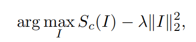
把训练阶段得到的参数固定住，初始化一张全0的图，这些像素都是变量，通过反向传播构造出来一张图。原来训练时将那些图都零均值化，因此这里将图构造出来后所有像素都加上原来训练集图片像素的均值。
设计目标函数时，我们不是最大化类后验，而是最大化图片在这个类上的分数，是因为最大化类后验能通过最小化其他类的分数来实现
Image-Specific Class Saliency Visualisation
这个和前面的那个是两个不同的任务。前面的那个是想重构出某一个分类的图像，这个是想看图像中哪个部分比较重要
梯度的大小和图像大小一样，每一点对应原图像的重要程度，因此把梯度画出来就是Salienc
更新完模型以后，我们要重新采样数据再更新模型。注意，一般策略梯度（policy gradient，PG）采样的数据只会用一次。我们采样这些数据，然后用这些数据更新参数，再丢掉这些数据。接着重新采样数据，才能去更新参数。
PG实现技巧：1、添加基线；2、分配合适的分数
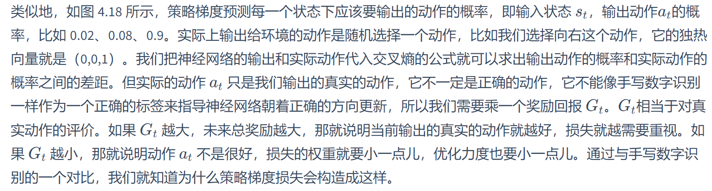
策略梯度是同策略
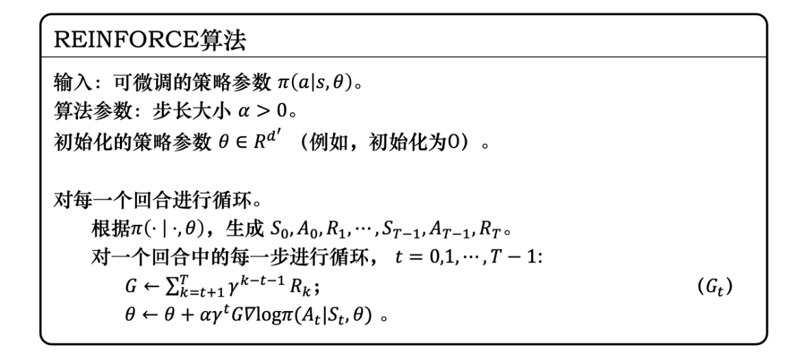
PPO（近端策略优化）是策略梯度的变形
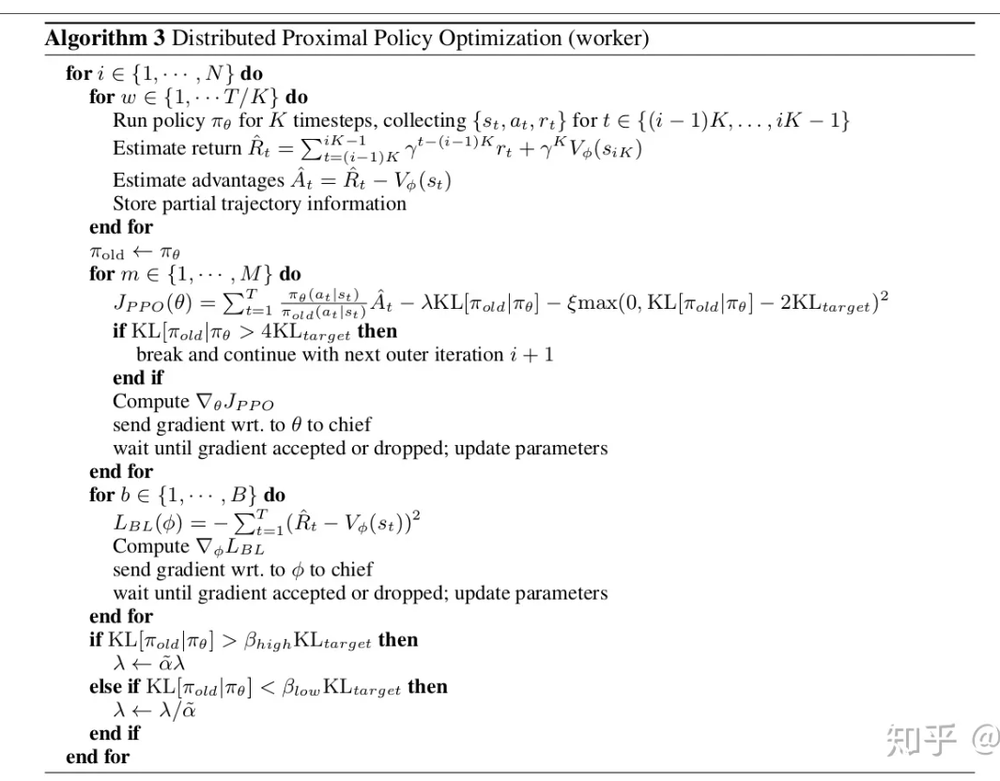
其实应该是on-policy？http://www.deeprlhub.com/d/112-epoch1ppoon-policyoff-policy/4
DQN：
critic计算的是 $V^\pi(s)$，这里的 $\pi$ 称为actor，critic的输出取决于actor和state
蒙特卡洛：
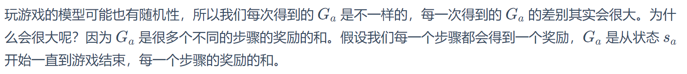
时序差分：
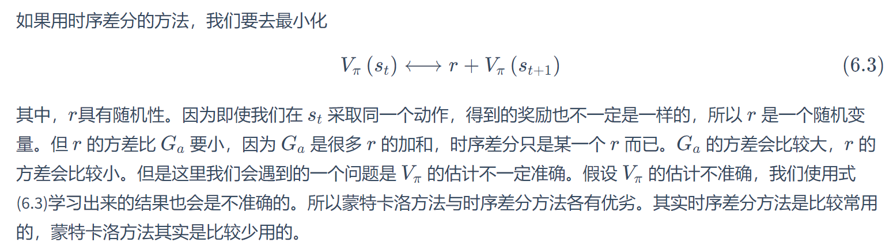

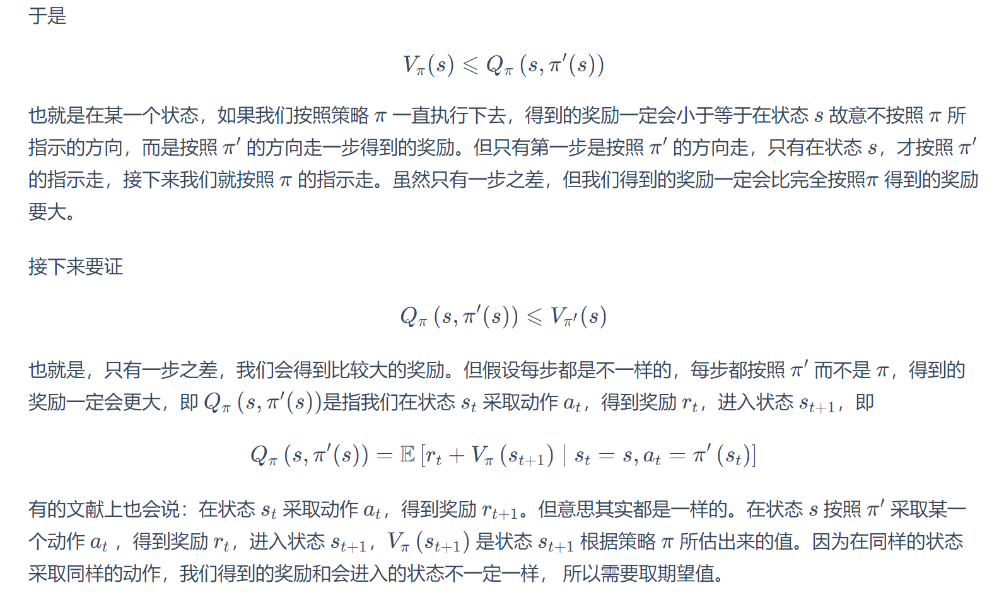
DQN要求的是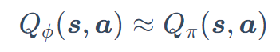
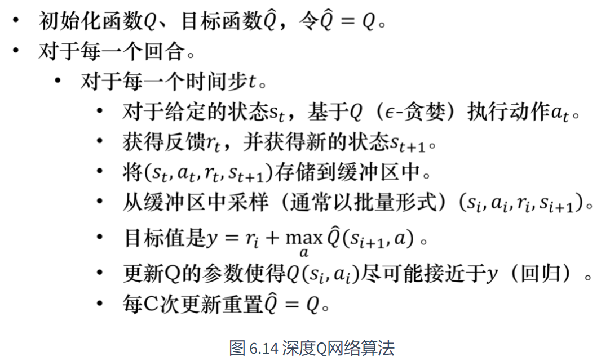
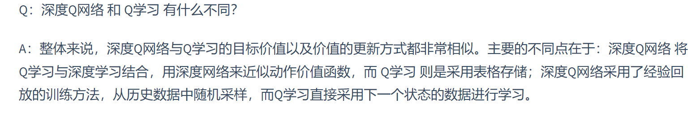
Double DQN
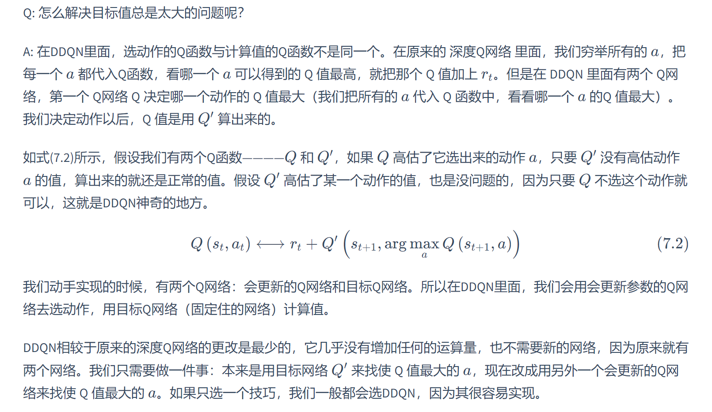
Dueling DQN
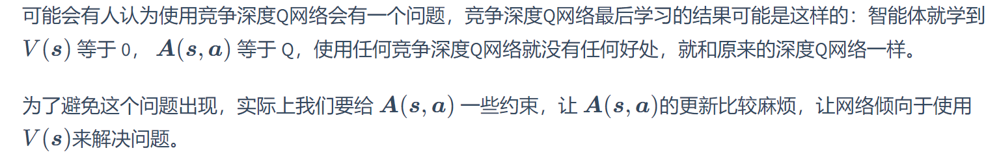
比如让A的一列的均值为0
noisy net
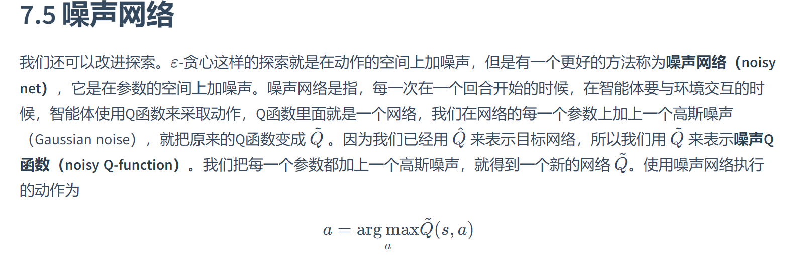
不用 $\epsilon$-贪心而是给网络参数加噪声
分布式Q函数是对分布（distribution）建模
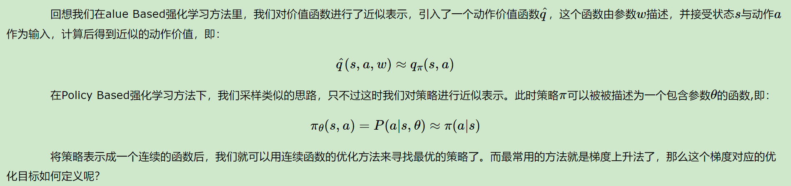
DQN是value based
https://www.cnblogs.com/pinard/p/10137696.html
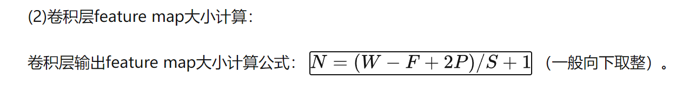
https://www.cnblogs.com/mx0813/p/12623249.html
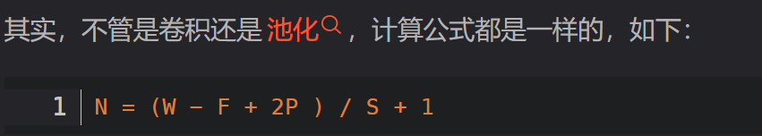
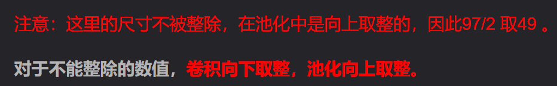